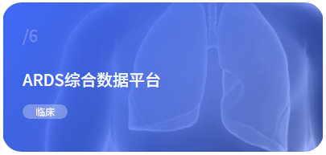
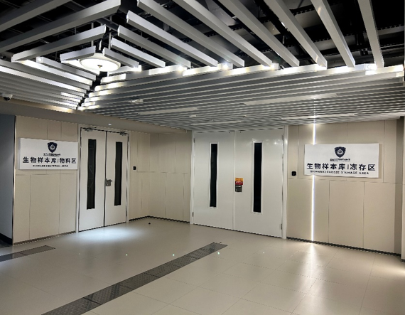
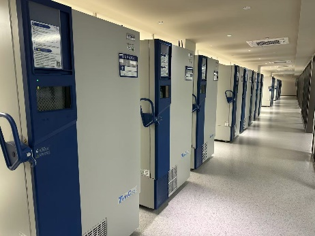

本平台整合多中心临床队列、样本库与组学数据，服务于ARDS与脓毒症机制研究、临床决策支持及高质量循证医学研究。
3271 例临床数据库患者 | 2867 例样本库患者样本 | 多组学联合研究
项目信息
宋振举，复旦大学附属中山医院副院长，复旦大学附属徐汇医院院长，复旦大学附属中山医院急诊科副主任（主持工作），上海市应急救援与急危重症研究所所长，上海市急危重症临床研究中心主任，上海市肺部炎症与损伤重点实验室副主任, 复旦大学附属中山医院急诊科主任医师、教授、博士研究生导师，国家重点研发计划首席科学家，上海市重大传染病和生物安全研究院双聘PI。中华医学会急诊医学分会第九届青年委员会副主任委员，中华医学会急诊医学分会危重病学副组长，中国医药教育协会急诊医学专科分会副主任委员, 中国医学救援协会生命支持技术分会第一届理事会副会长，上海市医师协会急诊科医师分会第三届委员会副会长，上海市医师协会急诊科医师分会第四届会长，上海医学会急诊医学专科分会副主任委员。《中国临床医学》和《元宇宙医学》杂志副主编，《中华急诊医学杂志》和《World Journal Of Emergency Medicine》编委。
主要从事ARDS、脓毒症和多器官功能衰竭的发病机制和临床诊治研究。作为第一申请人获得上海市公共卫生优秀青年人才和上海市公共卫生优秀学科带头人、上海市科技创新行动计划医学创新研究专项、国家自然科学基金青年科学基金、国家自然科学基金面上项目、国家重点研发计划等多个省部级、国家级项目资助，目前在研省部级课题8项。近5年来作为第一作者和通讯作者在国内外学术期刊上发表论著30余篇，其中SCI论文18篇，包括National Science Review、Nature Communications、Critical Care、European Respiratory Journal等国际知名杂志。
急性呼吸窘迫综合征（ARDS）是一类由肺内/外多种病因诱发的、以广泛炎症性肺水肿为特征的临床危重综合征。尽管肺保护性通气、俯卧位通气等支持技术取得了长足进步，流行病学调查显示，ARDS患者的死亡率仍高达45%。造成这一瓶颈的核心原因在于ARDS存在高度的临床异质性。不同病因、不同炎症表型及病理生理过程混杂，导致传统“一刀切”的治疗方案难以对所有患者有效，存在治疗反应异质性。
随着系统生物学的发展，多组学技术为揭示疾病异质性提供了革命性工具。通过对同一患者群体进行多维度分子特征描绘，有望识别出具有不同预后的“亚型”或“内表型”，从而实现基于病理生理机制的精准治疗。然而，目前大多数ARDS多组学研究存在样本量小、单中心、数据维度单一、缺乏外部验证等局限。单一中心的病例入组标准、采样时间点及检测平台差异显著，导致组学数据批次效应强、可比性差，难以形成可泛化的分子分型标准。因此，构建标准化、大样本量、覆盖完整临床表型与生物样本的多中心队列数据库，已成为将多组学发现转化为临床精准治疗策略的当务之急和基础性前提。
- Lin M#, Xu F#, Deng Y#, Wei Y, Shi F, Xie Y, Xie C, Chen C, Song J, Shen Y, Lin Y, Ding H, Zhou Y, Lu S, Chen Y, Lan L, Zhao W, Zhu J, Kuang Z, Pang W, Que S, Fang X, Ji R, Dong C, Zhang J, Liu Q, Zhang Z, Gao C, Chen L, Song Y, Zhan L, Huang L, Wu X*, Wang R*, Song Z*. Large-scale proteomic profiling identifies distinct inflammatory phenotypes in acute respiratory distress syndrome: a multicentre, prospective cohort study. Eur Respir J. 2026 Feb 5;67(2):2500933.SCI, IF=23.8，通讯作者
- Mu S, Chang M, Shen Y, Wu X, Han Y, Xiang H, Luo Y, Chen Y, Zheng H, Song Z, Tong C. Gut microbiota metabolite butyric acid alleviated Klebsiella Pneumoniae induced lung injury by regulating CX3CR1+NK via PI3K/AKT pathway. Burns Trauma. 2025 Oct 29;14:tkaf069.SCI, IF=11，并列通讯作者
- Lin K, Deng X, Wang H, Jiang Y, Sun J, Ding H, Ye M, Wang X, Wang Y, Yuan L, Song Z, Lin X, Sun S, Jiang N. Activation of ERBB4 Pathway Inhibits Pathological Transdifferentiation of Lung Epithelial Progenitors into CD66c+ Basal Cells in Severe Lung Injury. Adv Sci (Weinh). 2026 Apr 7:e19151.SCI, IF=14.1，并列通讯作者
- Sun L#, Li X#, Xu F, Chen Y, Li X, Yang Z, Yang Y, Wang K, Ren T, Lin Z, Wang H, Wang X, Lu Y, Song Z, Cheng ZL, Wu D. A critical role of N4-acetylation of cytidine in mRNA by NAT10 in T cell expansion and antiviral immunity. Nat Immunol. 2025 Apr;26(4):619-634.SCI, IF=27.7，并列通讯作者
- Kuang Z#, Luo Y#, Chen Y#, Yang Y, Chen C, Xu F, Chen Y, Zhou Y, Shen Y, Yuan L, Su H, Tong C*, Song Z*. Glucocorticoid-mediated suppression of the CCL2-CCR2 axis drives monocyte dysfunction in severe pneumonia among immunocompromised hosts. Respir Res. 2025 Nov 26;26(1):355.SCI, IF=5.7，通讯作者
- Kuang Z#, Li R#, Lu S#, Wang Y, Luo Y, Shen Y, Yuan L, Yang Y, Song Z*, Jiang N*, Tong C*. Uncovering host response in adults with severe community-acquired pneumonia: a proteomics and metabolomics perspective study. World J Emerg Med. 2025;16(3):248-255.SCI, IF=3.8，并列通讯作者
- Wu X#, Chen Y#, Cao K#, Shen Y#, Wu X#, Yang Y, Kuang Z, Li Q, Lu Z, Jia Y, Shao M, Gu G, Wang X, Ye Y, Wang Y, Chen S, Yu Z, Wei W, Ding L, Lan L, Gu T, Long X, Sun J, Xing L, Shen J, Han Y, Luo Y, Mu S, Lin M, Zhang X, Zeng R, Xu J*, Zhao G*, Huang L*, Song Z*. Reduced clinical severity during 2022 Shanghai Spring epidemic of SARS-CoV-2 omicron BA.2 variant infection - An integrated account of virus pathogenicity and vaccination effectiveness. Natl Sci Rev. 2024 Jan 15;11(4):nwae011.SCI, IF=16.3，通讯作者
- Lin M#, Xu F#, Sun J, Song J, Shen Y, Lu S, Ding H, Lan L, Chen C, Ma W, Wu X*, Song Z*, Wang W*. Integrative multi-omics analysis unravels the host response landscape and reveals a serum protein panel for early prognosis prediction for ARDS. Crit Care. 2024;28(1):213.SCI, IF=8.8，并列通讯作者
- Lin M#, Cao K#, Xu F#, Wu X#, Shen Y#, Lu S, Kuang Z, Ding H, Yuan S, Shao M, Gu G, Xing L, Gu T, Chen S, Sun J, Zhu J, Zhang X, Yang Y, Zhao G*, Huang L*, Xu J*, Song Z*. A follow-up study on the recovery and reinfection of Omicron COVID-19 patients in Shanghai, China. Emerg Microbes Infect. 2023 Dec;12(2):2261559.SCI, IF=8.4，通讯作者
- Lu Z#, Kuang Z#, Li B, Song Z*, Huang L*. Understanding the viral shedding time of Omicron variant BA.2 infection in Shanghai: A population-based observational study. Heliyon. 2023 Jun 11;9(6):e17173.SCI, IF=3.776，并列通讯作者
- Long X#, Mu S#*, Zhang J#, Xiang H, Wei W, Sun J, Kuang Z, Yang Y, Chen Y, Zhao H, Dong Y, Yin J*, Zheng H*, Song Z*. Global signatures of the microbiome and metabolome during hospitalization of septic patients. Shock. 2023;59:716-724.SCI, IF=3.533，通讯作者
- Liu J, Pan L, Hong W, Chen S, Bai P, Luo W, Sun X, He F, Jia X, Cai J, Chen Y, Hu K, Song Z#, Ge J#, Sun A#. GPR174 knockdown enhances blood flow recovery in hindlimb ischemia mice model by upregulating AREG expression. Nat Commun. 2022;13(1):7519.SCI, IF=17.694，并列通讯作者
- Mu S#, Xiang H#, Wang Y#, Wei W, Long X, Han Y, Kuang Z, Yang Y, Xu F, Xue M, Dong Z, Tong C*, Zheng H*, Song Z*. The pathogens of secondary infection in septic patients share a similar genotype to those that predominate in the gut. Crit Care. 2022;26(1):68.SCI, IF=8.8，通讯作者
- Wei W#, Mu S#, Han Y#, Chen Y, Kuang Z, Wu X, Luo Y, Tong C*, Zhang Y*, Song Z*. Gpr174 Knockout Alleviates DSS-Induced Colitis via Regulating the Immune Function of Dendritic Cells. Front Immunol. 2022;13:841254.SCI, IF=8.786，通讯作者
- Chen Y#, Kuang Z#, Wei W#, Hu Y, Mu S, Ding H, Han Y, Tong C*, Yang Y*, Song Z*. Protective role of (5R)-5-hydroxytriptolide in lipopolysaccharide-induced acute lung injury by suppressing dendritic cell activation. Int Immunopharmacol. 2022;102:108410.SCI, IF=4.932，通讯作者
- Wang J#, Hu Y#, Kuang Z#, Chen Y, Xing L, Wei W, Xue M, Mu S, Tong C*, Yang Y*, Song Z*. GPR174 mRNA Acts as a Novel Prognostic Biomarker for Patients With Sepsis via Regulating the Inflammatory Response. Front Immunol. 2022;13:789141.SCI, IF=7.561，通讯作者
- Song D, Yan F, Fu H, Li L, Hao J, Zhu Z, Ye L, Zhang Y, Jin M, Dai L, Fang H*, Song Z*, Wu D*, Wang X*. A cellular census of human peripheral immune cells identifies novel cell states in lung diseases. Clin Transl Med. 2021;11(11):e579.SCI, IF=11.492，并列通讯作者
- Zhang J#, Xue M#, Chen Y#, Liu C#, Kuang Z, Mu S, Wei W, Yin J, Xiang H, Hu Y, Long X, Fang S, Sun S, Wang B*, Tong C*, Song Z*. Identification of soluble thrombomodulin and tissue plasminogen activator-inhibitor complex as biomarkers for prognosis and early evaluation of septic shock and sepsis-induced disseminated intravascular coagulation. Ann Palliat Med. 2021;10(10):10170-10184.SCI, IF=2.595，通讯作者
- Yin J, Chen Y, Huang JL, Yan L, Kuang ZS, Xue MM, Sun S, Xiang H, Hu YY, Dong ZM, Tong CY, Bai CX, Song ZJ. Prognosis-related classification and dynamic monitoring of immune status in patients with sepsis: A prospective observational study. World J Emerg Med. 2021;12(3):136-142.SCI, IF=2.266，通讯作者
- Mu S, Zhang J, Du S, Zhu M, Wei W, Xiang J, Wang J, Han Y, Zhao Y, Zheng H*, Tong C*, Song Z*. Gut microbiota modulation and anti-inflammatory properties of Xuanbai Chengqi decoction in septic rats. J Ethnopharmacol. 2021;267:113534.SCI, IF=4.36，通讯作者
- Han Y, Mu SC, Wang JL, Wei W, Zhu M, Du SL, Min M, Xu YJ, Song ZJ, Tong CY. MicroRNA-145 plays a role in mitochondrial dysfunction in alveolar epithelial cells in lipopolysaccharide-induced acute respiratory distress syndrome. World J Emerg Med. 2021;12(1):54-60.SCI, IF=2.266，通讯作者
- Kuang Z, Yang Y, Wei W, Wang J, Long X, Li K, Tong C, Sun Z, Song Z. The characteristics and risk predictors on mortality of community-acquired pneumonia in autoimmune disease-induced immunocompromised host: a retrospective study. World J Emerg Med. 2020;11(3):136-142.SCI, IF=2.266，通讯作者
- Song D, Liu F, Zhu B, Yin J, Kuang Z, Dong Z, Yan L, Ye L, Zhang Y, Song Z*, Wu D*, Wang X*. Global Immunometabolic Profiling of AECOPD. Small Methods. 2020;10(26).SCI, IF=14.188，通讯作者
- Zhu M, Li C, Song ZJ, Mu SC, Wang JL, Wei W, Han Y, Qiu DZ, Chu X, Tong CY. The increased marginal zone B cells attenuates early inflammatory responses during sepsis in Gpr174 deficient mice. Int Immunopharmacol. 2020;81:106034.SCI, IF=4.932，并列第一作者
Large-scale proteomic profiling identifies distinct inflammatory phenotypes in acute respiratory distress syndrome: a multicentre, prospective cohort study. Eur Respir J. 2026 Feb 5;67(2):2500933.
本项目组基于Olink血清蛋白组学，1048个患者，前瞻性、多中心、观察性研究，提出ARDS炎症三分型：
高炎症型 C1：表现出特有的免疫原性细胞死亡相关通路异常活化，死亡率高
低炎症型 C2：炎症标志物水平较低，免疫反应较弱，肺损伤较轻，死亡率低
混合型 C3：表现为免疫系统的双向失调，既有相对活跃的炎症反应，也存在一定程度免疫抑制，临床表现复杂，总体预后介于高炎症型和低炎症型之间
对精准治疗的指导意义
糖皮质激素治疗：在C1型患者中，激素能显著降低90天死亡率，但在C2型患者中，激素反而显著增加了死亡率。在C3型中未观察到显著获益；
高PEEP通气策略：高PEEP仅对C1型患者有益，对C2型患者却显著增加了死亡风险。
新分型体系的成功构建为深入解析ARDS生物学异质性、建立个体化治疗策略奠定了重要基础。

合作单位
队列信息
| 城市 | 医院名称 |
|---|
数据库
数据库：3271例患者数据
| 主中心 | 分中心 |
|---|---|
| 955 |

样本库
样本库：2867例患者样本，包含血浆、血清、PBMC
| 主中心 | 分中心 |
|---|---|
| 1526 | 1341 |



组学数据
| 血清蛋白组（Olink） | 3446例样本，其中454人为动态蛋白组学 |
|---|---|
| 血清代谢组 | 2223例样本，其中455人为动态代谢组学 |
| 单细胞转录组 | 289例样本 |
文件下载
主研究中心（复旦大学附属中山医院）相关文件下载。
各分研究中心文件将在后续添加，届时按中心名称分别排列展示。